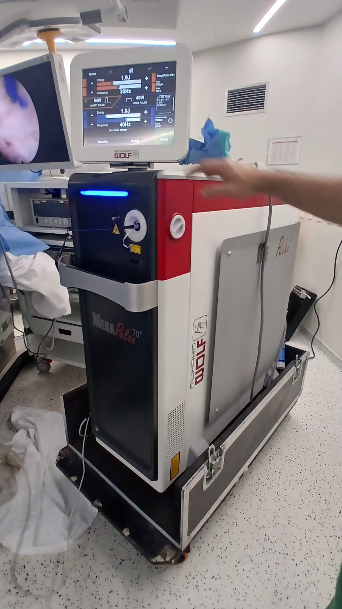
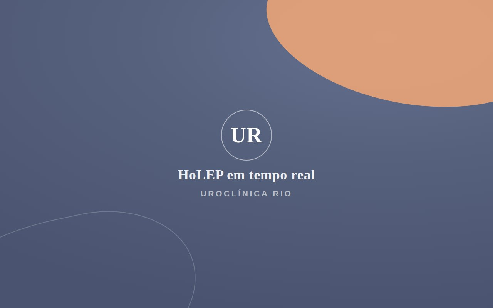
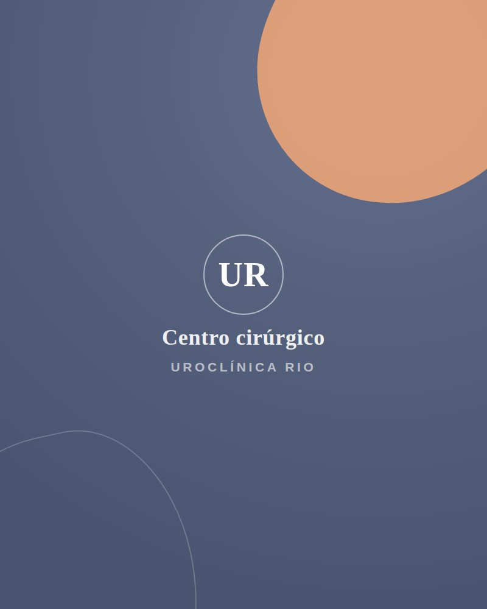
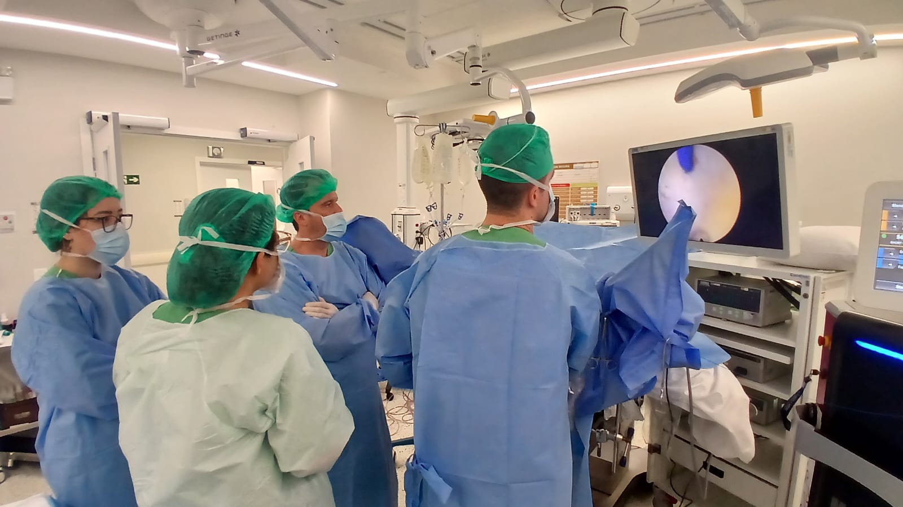

Enucleação da próstata com laser de hólmio — o tratamento definitivo e minimamente invasivo da próstata aumentada (hiperplasia benigna da próstata), sem cortes e para próstatas de qualquer tamanho.
A HoLEP (Holmium Laser Enucleation of the Prostate) é a enucleação da próstata com laser de hólmio: um procedimento endoscópico, realizado pela uretra e sem nenhum corte na pele.
Com o laser de hólmio, o urologista separa e remove por completo o tecido prostático que comprime a uretra e dificulta a passagem da urina — o mesmo tecido que, na hiperplasia benigna da próstata (HPB), causa jato fraco, vontade frequente de urinar e sensação de esvaziamento incompleto. Por retirar todo o adenoma, a HoLEP oferece um resultado duradouro e uma das menores taxas de reoperação entre os tratamentos da próstata.

Laser de hólmio MegaPulse 70+Considerada um padrão de referência no tratamento da HPB, a HoLEP reúne a eficácia da cirurgia com o conforto de um procedimento minimamente invasivo.
Todo o procedimento é feito pela uretra, por via endoscópica — sem incisões e sem cicatrizes externas.
O laser de hólmio coagula enquanto corta, reduzindo o sangramento — uma opção segura inclusive para quem usa anticoagulantes.
Trata desde próstatas pequenas até as muito volumosas, que antes exigiam cirurgia aberta.
Na maioria dos casos, a sonda vesical é retirada em cerca de 24 horas, com alta hospitalar rápida.
Retorno ágil às atividades do dia a dia, com menos desconforto no pós-operatório.
Por remover todo o adenoma, apresenta baixa taxa de retratamento e melhora consistente do jato urinário.

HoLEP em tempo realRealizamos a HoLEP com plataforma de laser de hólmio de alta potência, que combina precisão de corte e coagulação em um único instrumento.
A HoLEP é indicada para homens com sintomas urinários causados pelo aumento benigno da próstata (HPB) que não melhoram apenas com medicação.
A indicação é sempre individual, definida após avaliação urológica com exames como PSA, ultrassonografia, urofluxometria e, quando necessário, estudo urodinâmico.

Centro cirúrgico · UroClínica RioPela uretra, o laser de hólmio separa o adenoma (o tecido que obstrui) da cápsula prostática, como quem descasca a parte interna da próstata — sem cortes na pele.
A mesma energia do laser coagula os vasos durante a cirurgia, mantendo o campo limpo e reduzindo o sangramento ao longo de todo o procedimento.
O tecido enucleado é levado até a bexiga e removido por morcelação, sendo enviado para análise anatomopatológica. Ao final, coloca-se uma sonda temporária.
A sonda costuma ser retirada em cerca de 24 horas, com alta rápida e acompanhamento próximo da equipe da UroClínica Rio em cada etapa.

HoLEP em equipe · UroClínica RioComo a enucleação a laser se posiciona frente às técnicas tradicionais de tratamento da próstata aumentada.
| Critério | HoLEP (laser de hólmio) | RTU de próstata | Cirurgia aberta |
|---|---|---|---|
| Cortes na pele | Nenhum | Nenhum | Incisão no abdome |
| Tamanho da próstata | Qualquer tamanho | Pequenas e médias | Grandes |
| Sangramento | Baixo | Moderado | Maior |
| Tempo de sonda | Curto (≈ 24h) | Intermediário | Mais longo |
| Retratamento a longo prazo | Baixo | Intermediário | Baixo |
Quadro comparativo de caráter educativo. A melhor técnica para cada paciente é definida na consulta, considerando o tamanho da próstata, os sintomas, o histórico de saúde e os objetivos do tratamento.
Com o laser de hólmio, tratamos a próstata aumentada de qualquer tamanho de forma minimamente invasiva, com resultado duradouro e recuperação rápida.
HoLEP é a enucleação da próstata com laser de hólmio — uma cirurgia minimamente invasiva, feita pela uretra e sem cortes na pele, que remove todo o tecido prostático responsável pela obstrução urinária na hiperplasia benigna da próstata (HPB).
Sim. Uma das principais vantagens da HoLEP é tratar próstatas de qualquer tamanho, inclusive as muito volumosas que antes exigiam cirurgia aberta. O laser de hólmio permite enuclear grandes volumes de tecido por via endoscópica, sem incisões.
Comparada à ressecção transuretral (RTU) e à cirurgia aberta, a HoLEP costuma ter menos sangramento, menor tempo de sonda e de internação, recuperação mais rápida e resultado duradouro, com baixa taxa de retratamento — sem cortes na pele.
A HoLEP preserva a função erétil na grande maioria dos casos. É comum, porém, a ejaculação retrógrada (o sêmen segue para a bexiga), que não afeta o prazer nem a saúde. Cada caso é avaliado individualmente pelo urologista.
Na maioria dos casos, a sonda é retirada em cerca de 24 horas e a alta hospitalar é rápida. O paciente costuma retornar às atividades leves em poucos dias, com orientações individualizadas da equipe da UroClínica Rio.
Na UroClínica Rio, com médicos especialistas em próstata e laser de hólmio. Fazemos a avaliação nas unidades da Barra da Tijuca e de Bonsucesso, com agendamento pelo WhatsApp (21) 97621-9403.
Tire suas dúvidas sobre a HoLEP e descubra se o tratamento a laser é o mais indicado para o seu caso.